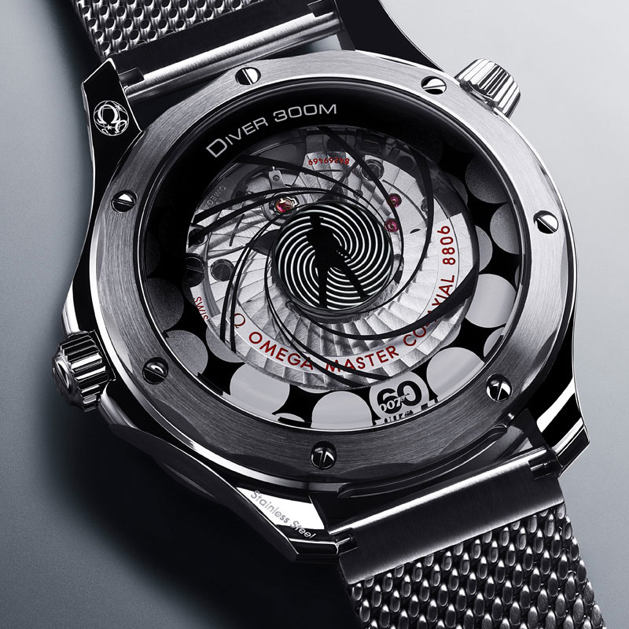
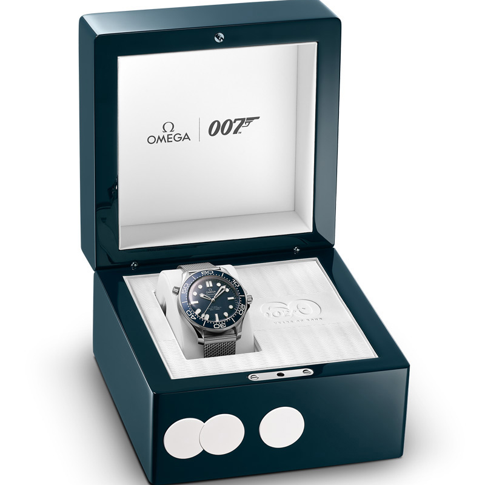

다이버 300M
제임스 본드 탄생 60주년 기념

제임스 본드 탄생 60주년 기념
-
60주년 기념 베젤의 12시 방향에는 거의 대부분의 다이버 300M 모델의 특징이었던 기존의 역삼각형 모양 대신에 기념 숫자 60이 사용되었습니다.
-
골든아이 블루 양극 산화 처리된 블루 알루미늄 다이얼에는 1995년 007 골든아이에서 제임스 본드가 착용한 시계로부터 영감을 얻은 레이저 각인 물결 패턴이 새겨져 있습니다.
-

수퍼 루미노바 12시 방향의 기념 숫자 60과 아래의 수직선, 미닛 핸드는 모두 밤이 되면 그린 컬러의 빛을 발산합니다. 아워 및 롤리팝 세컨즈 핸즈는 로듐 도금 아워 마커와 함께 블루 컬러의 빛을 발합니다.
-
메쉬 브레이슬릿 메탈릭 스타일에 텍스처를 더하고 브러싱 처리된 스테인리스 스틸 브레이슬릿은 007 노 타임 투 다이에서 본드가 착용한 티타늄 시계와 마찬가지로 우아한 메쉬 스타일을 선보입니다.
-

애니메이션 처리된 케이스백 제임스 본드의 실루엣과 회전하는 건 배럴이 등장하는 유명한 오프닝 시퀀스는 특별한 미세 구조 금속화로 장식된 사파이어 크리스탈 하단의 케이스백에 새겨져 있습니다. 롤리팝 세컨즈 핸드가 회전하며 연출되는 “므와레(moiré)” 효과 애니메이션으로 멈추지 않는 액션을 선보입니다.
-

제임스 본드에서 영감을 받은 박스 스틸 소재의 씨마스터 다이버 300M은 오리지널 다이버 300M 패턴으로 장식된 블루 우드 박스에 담겨 제공됩니다. 이 박스는 오른쪽의 비밀 푸쉬 버튼을 포함하여 클래식한 제임스 본드 영화의 오프닝 시퀀스에서 영감을 얻은 세 개의 도트가 장식되어 있습니다.